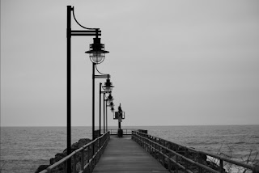
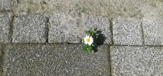

|
Sol Yanımızdaki GüçSizce de insanların bakış açısı bir gecede değişebilir mi? Eğer bana sorarsanız değişebiliyor. Peki nasıl mı? İşte tam olarak şöyle... |

|
Evde Kal! Mutlu Kal!Sevgili okurlarım bugün sizlerle aslında yine aynı konuda ama biraz daha güncel bir noktada buluşacağız. Bırakın tüm ülkeyi, tüm dünya olarak başa çıkmaya çalıştığımız Covid-19'un bizden... |

|
Neler oluyor hayatta?Sizlerle uzun zamandır bir araya gelmediğimi fark ettim ve hemen iş başına koyuldum. Hem sizi hem de yazmayı çok özledim ama ne yazık ki bir türlü yazmak için fırsatım olmadı... |
|  |
Sevmek...Bazen yazılara dökemeyeceğimiz kadar zordur sevmek... Hani derler ya 'ağlanacak halimize gülüyoruz' diye, tam da o kıvama getiriverir insanı. Kimi zaman varlığıyla ağlatır, güldürür... |
|  |
Tesadüfler...Tesadüfler... Her ne kadar inanmak, görmek ve yaşamak istemesek de, gerçek olmadıklarını anladığımızda yıkılsak da aslında iyi ki varlar. Belki farkında değiliz ama bizi aynı şeye... |

|
İçimizdeki çocuk...Sizin de hiç yazmadığınız ya da konuşmak istemediğiniz hatta böyle kilitlenip kaldığınız dönemler oldu mu hiç? Her şeyden uzak kalmak istediğiniz, mutsuzlukla mutluluk arasında kimsenin... |

|
Güzel insanlar...İnsanlar görüyorum... Birbirlerinin hayallerine, düşüncelerine saygı duyan; karşısındaki insanı değiştirmeye çalışmadan olduğu gibi kabul eden insanlar. Yarı yolda bırakmayan, yalan... |
Hayallerimiz..Belki de tam da şuanda harekete geçmemiz gerekiyordur. Bize isteklerimizden vazgeçmemizi söyleyen insanlara karşı dik durmamız gerekiyordur. Yılmak ve pes etmek yerine daha... |

|
Kaybetmeyeceğiz..Farkında olmadan insanlığımızı kaybeder, mutluluğun getirdiği sesleri duyamaz olduk.Sokakta yürürken, otobüste eve işe okula giderken gördüğümüz küçük bir çocuğa gülümseyemez... |

|
Ah şu korktuklarımız..Hepimiz bir çok şey yapmak isteyip kendimizi hiçbir şey yapmazken buluyoruz.Peki neden? Aslında cevabı o kadar basit ki.. Korkuyoruz. Yeni insanlarla tanışmaktan, yeni şeyler araştırmaktan... |

|
Kim bu Beyza Cava?Sizinle paylaşacağımız çok şey var ancak öncelikle Beyza Cava'nın kim olduğundan bahsetmek istiyorum.Beyza, 1998 yılının Ekim ayında İstanbul'da dünyaya gelmiştir.Eğitim hayatı boyunca... |